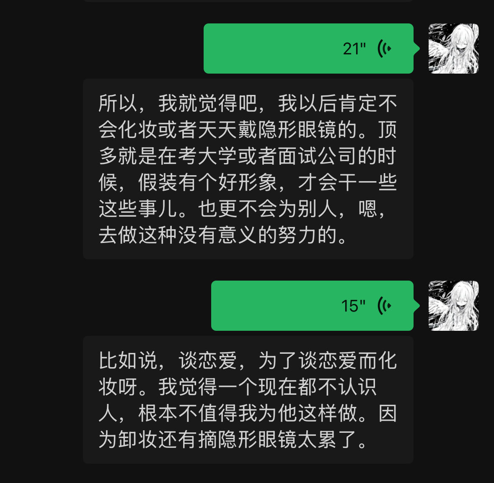

妆品，让柜哥在我脸上帮我试，那个柜哥的声音和态度都很阴阳怪气，像第五人格的mean0，特别烦。假睫毛在眼皮上也有很大的异物感，拍完照我就扣下来了。然后我又没带卸妆水，在很累的情况下去便利店挑了半天卸妆水，卸妆和隐形眼镜花了我快两个小时，隐形眼镜干在眼睛上，我把眼球都弄红了还摘不下来，


为什么很多地雷女对自己的男朋友有那么多的要求，占有欲甚至怨气，只要一点被她们不满意就会变的像地雷一样，从化妆这方面我想到了一些原因。首先就是化妆的时候非常难受，化妆品的香味很难闻，吸进去可能还对身体不好，然后保持妆容不花也很困难，因为我没有化妆品所以补妆就去了香奈儿专柜假装要买化 https://t.co/qnRScmsW4V